Autobot læser dine skærmbilleder, videoer, lydoptagelser og dokumenter, skriver et struktureret dansk overblik og tegner en redigerbar swimlane-proces — med PDD-dokumentation, GDPR & risiko, modenhed, ROI og tværgående porteføljeoverblik.
Ingen installation · kører i browseren · indbygget demo uden upload
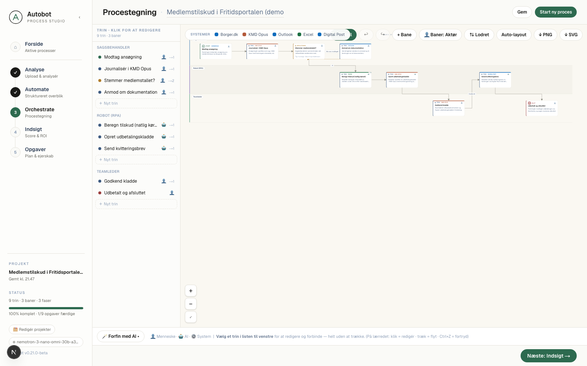
Fem trin fra rå optagelse til en proces, der kan vises, redigeres og dokumenteres — uden at tegne en eneste kasse i hånden.
Forsiden samler hele RPA-porteføljen grupperet pr. fagenhed — med status, ansvarlige, robotter og fagsystemer. Det der kræver handling ligger øverst, og systemloggen viser de seneste kørsler.
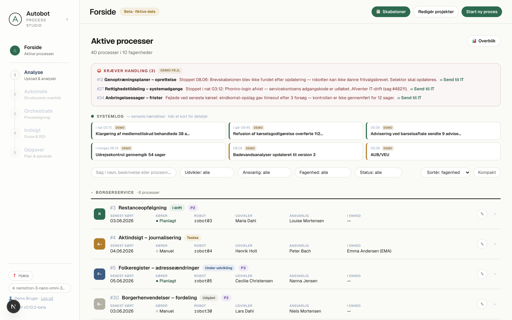
"📊 Overblik" giver ledelsen tværgående nøgletal med ét klik — uden at forlade forsiden. Status, ejerskab, systemafhængighed og robot-flåde, beregnet ud fra processerne.
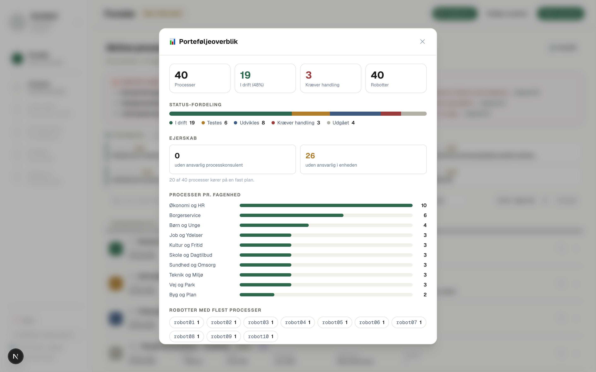
Skærmbilleder, skærmoptagelser, en lydforklaring eller eksisterende dokumentation. Autobot analyserer det hele og streamer beskrivelsen live mens den skrives.
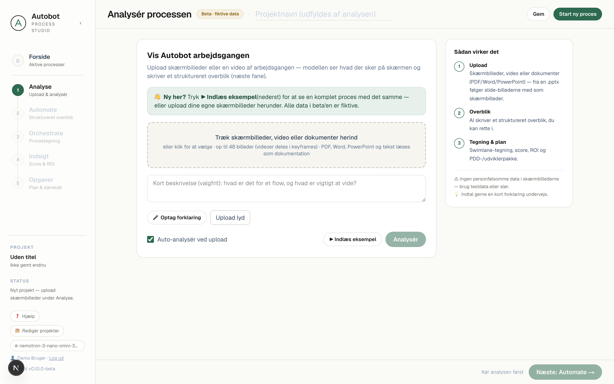
Den multimodale model skriver en trinvis beskrivelse på dansk af præcis hvad der sker. Du retter teksten, før den bliver til en tegning — så processen bliver, som du vil have den.
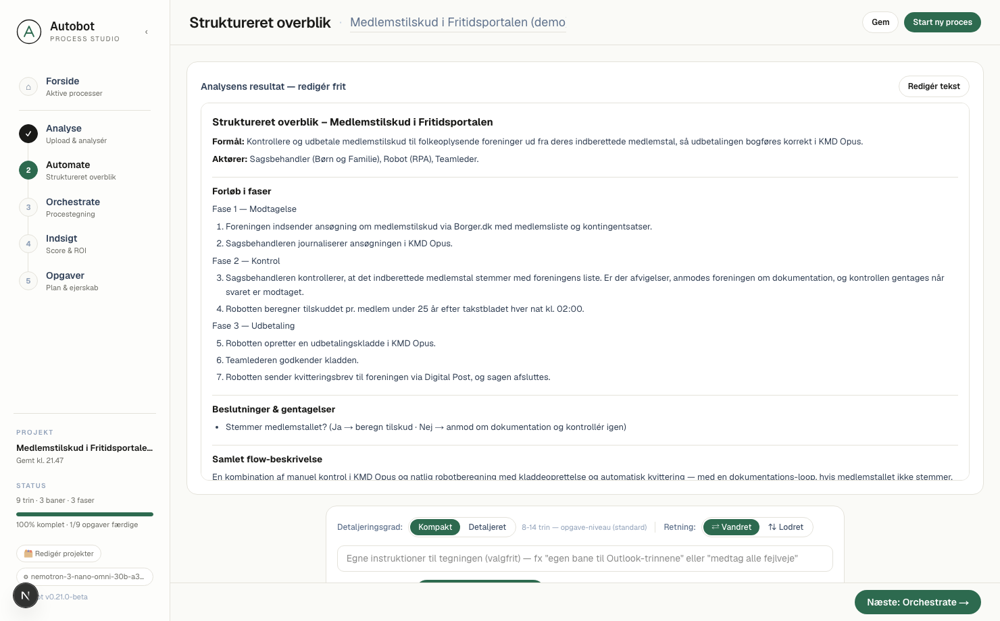
Et helt egenudviklet tegne-lærred — bygget fra bunden uden tredjeparts-biblioteker, så musen altid reagerer. Træk trin, klik for at redigere, forbind ved at trække fra den grønne prik.
Se processen som vandrette baner (klassisk swimlane) eller lodrette kolonner med flow oppefra og ned — alt efter hvad der passer til processen og skærmen.
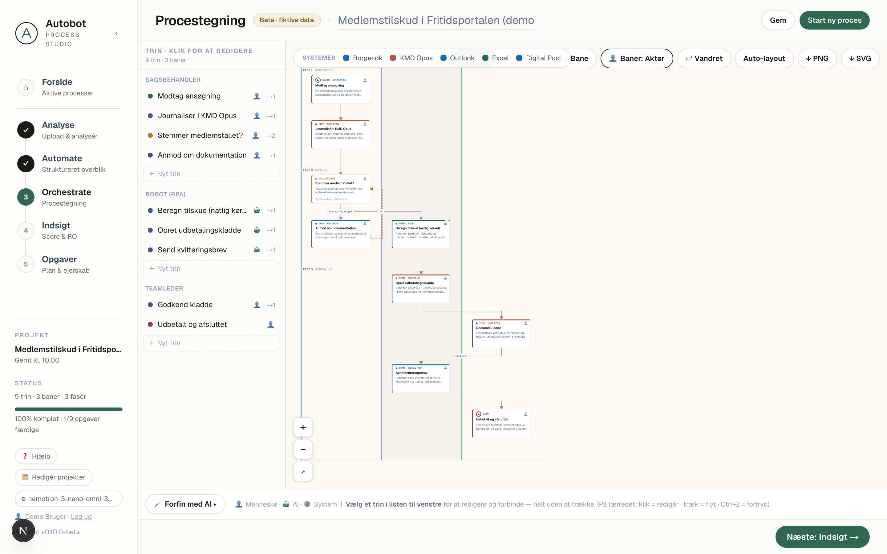
Med ét klik skifter banerne fra at vise hvem der udfører trinnet (sagsbehandler, robot, teamleder) til hvilket system det sker i (KMD Opus, Borger.dk, Excel …) — med systemets egen farve på banen.
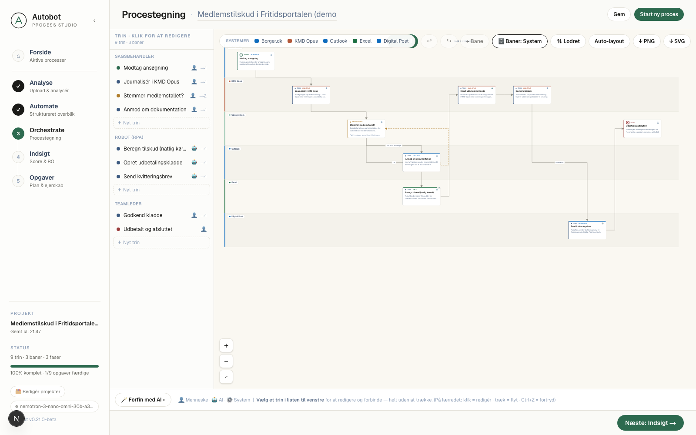
Klik et trin og redigér type, beskrivelse, fagsystem, AI-agenter/workers, SLA, persondata og data ind/ud. Afspil derefter et gennemløb (simuleret) og se hvert trin blive valideret.
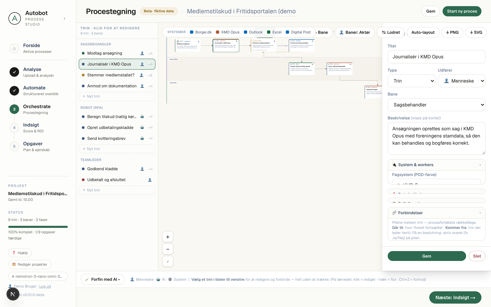
Autobot beregner modenhed og en business case, kører en regelbaseret proces-gennemgang og holder GDPR/risiko + "klar-til-drift" i styr — så processen er dokumenteret og forsvarlig før drift.
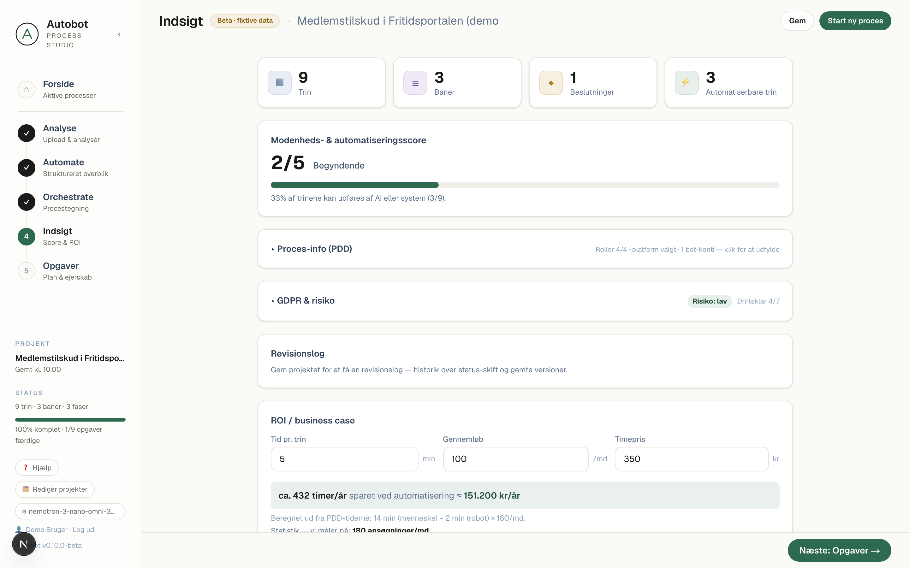
Hvert trin kan blive en opgave med ejer, deadline og status. Registeret holder styr på versioner, status og redigering af alle egne processer.
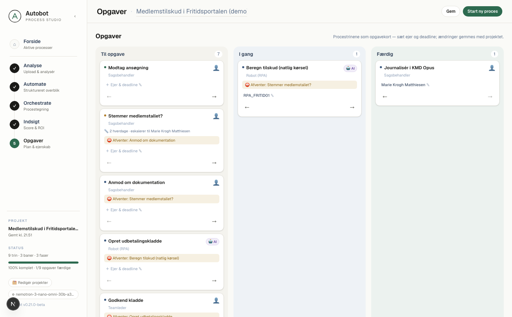
Alt kører lokalt i browseren — dansk, privat og hurtigt at vise frem. Ægte data bliver i browseren; bygget til at være let at stole på.
Hele værktøjet — også procestegningen — er tilpasset små skærme, så det kan bruges ude hos fagenhederne på tablet og mobil.
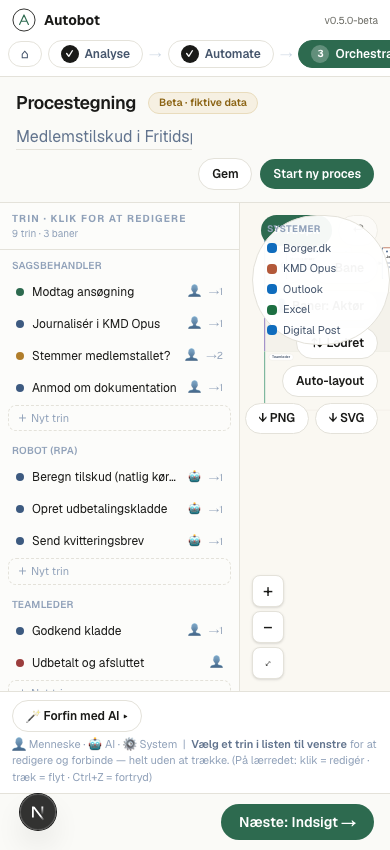
Moderne web-stak med en multimodal sprogmodel — og et tegne-lærred bygget helt fra bunden.